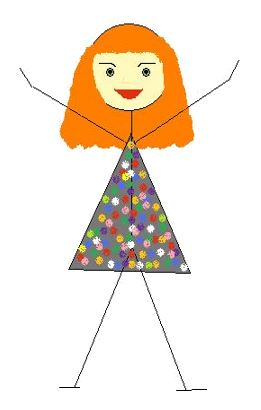

Znaczniki wyróżniające treść
"znacznik atrybut="wartość""treść"/znacznik"
br - znacznik pozwalający na przejście do nowej linii. Po dodaniu go na końcu frazy, po której
chcemy rozpocząć nową linię, kolejna część tekstu zaczyna się w nowej linii. Jest to znacznik
występujący
pojedynczo, nie ma swojej pary, tzw. znacznik samozamykający. Można go jednak zapisać też
tradycyjnie poprzez rozpoczęcie i zamknięcie znacznika na końcu danej frazy, po której chcemy zacząć
nową llinię. Ale najlepiej zapisać go po prostu w nawiasach ostrych jako "br/".
b (bold) - wyróżnienie wizualne tekstu z otaczającej go treści poprzez pogrubienie, nie ma żadnego
znaczenia semantycznego,
i (italic) - wyróżnienie wizualne tekstu z otaczającej go treści poprzez kursywę, nie ma żandego
znaczenia semantycznego,
strong - wyróżnia wizualnie tekst poprzez pogrubienie, ale ma również znaczenie semantyczne, służy
podkreśleniu znaczenia danej frazy,
em - wyróżnia wizualnie tekst poprzez kursywę, ale ma również znaczenie semantyczne, służy
podkreśleniu, że dany zwrot został użyty w innym znaczeniu niż dosłowne, często ironicznie.
Linkowanie i nawigacja
a - znacznik używany do tworzenia linków zewnętrznych oraz łacza wewnątrz dokumentu, opisywany jest
najczęsciej przez dwa atrybuty - href i target.
"a href="" target="""opis łącza"/a"
Tworząc link zewnętrzny jako wartość atrybutu href podajemy adres strony, do której chcemy się
odwołać, np. href="https://cotenfrontend.pl", a w opisie łącza wskazujemy dokąd link prowadzi
(będzie to literał, który będzie linkował do przestrzeni zewnętrznej).
Tworząc łącze w ramach dokumentu musimy posłużyc się atrybutem "id" identyfikującym dany element,
np. daną sekcję, header, etc. Identyfikator powinien być unikalny w ramach dokumentu
(id="moj-identyfikator") i odnosimy się do niego podając na początku jego wartości znak #. Czyli
jeśli danemu elementowi nadamy id o
wartości "notatki", to odnosimy się do niego wpisując href="#notatki". ważne jest też, m. in. z
punktu widzenia dostępności strony, by w opisie łącza wskazywać dokładnie, dokąd link prowadzi.
Przykładowo, jeśli w elemencie header damy id="top", to w stopce możemy stworzyć łącze pozwalające
na powrót na górę strony wyglądające w ten sposób: href="#top" i jako opis łącza podać "Wróć na górę
strony".
nav - służy do nawigacji, np. między podstronami w ramach dokumentu; wskazuje, że
jest to główna
nawigacja po stronie/serwisie.
Aby utworzyć kolejne podstrony, tworzymy kolejny plik, np. nauka-html.html (nie używamy znaków
diakrytcznych ani spacji, rozdzielamy myślinikami). Kopiujemy całą treść z pliku index.html i
zaczynamy porządki. Na początku tworzymy dodatkowy znacznik header, który znajduje się w body, ale
poza znacznikiem main. Dzięki temu na wszystkich podstronach będzie powtarzał się ten sam nagłówek.
Każdą treść powtarzalną wyrzucamy poza main, czyli oprócz znacznika header może to być przykładowo
znacznik footer. Treści takie nie są analizowane przez wyszukiwarki czy czytniki treści, które
skupiają się na treści zawartej w tagu main.
W takim znaczniku header znajdującym się poza tagiem main, wpisujemy tag nav i w ramach tego
znacznika, stosując znaczniki a, dodajemy linkowanie
do podstron, tworząc w ten sposób spis treści. Jako adres podajemy nazwę pliku podstrony, do której
linkujemy, czyli np. href="nauka-html.html". Dobrą praktyką jest, by menu się powtarzało, czyli
zawierało takie same linki na wszystkich podstronach, co oznacza, że na podstronie "strona główna"
powinien być również link do strony głównej. Przy przeklikiwaniu między stronami widać, że zmienia
się adres w urlu - na index lub nauka-html.
Elementem powtarzalnym jest również stopka, więc wycnamy ją na obu dokumentach z sekcji main i
wklejamy poza tym znacznikiem. Sam nagłówek h1 w
header w sekcji main zostawiamy w obu dokumentach, tylko zmieniamy jego treść w pliku
nauka-html.html, tak aby odpowiadał treści na tej podstronie, czyli np. "Nauka HTML-a". Robimy też
roszady w treści dokumentów.
Dodawanie obrazków na stronie
img scr="" alt=""
img - znacznik, który pozwala na dołączenie obrazka, który ma podany adres
Aby dodać obrazek, zapisujemy go w formacie np. jpg lub gif w folderze naszego projektu. Jest on
wówczas widoczny również wśród plików wyświetlonych w edytorze kodu. Następnie wybieramy miejsce,
gdzie chcemy taki obrazek dodać - ja postanowiłam dodać stworzony przeze mne obrazek przedstawiający
przykład schematu blokowego w notatce na ten temat w pliku nauka-js.html.
Obrazek znajduje się na tej podstronie.
W pliku tym w miejscu, gdzie chcemy dodać obrazek, otwieramy znacznik img i wskazujemy adres
obrazka,
podając jego nazwę, w moim przypadku to src="schemat-blokowy.JPG". Dodajemy też tekst alternatywny
jako wartość dla atrybutu "alt". Tekst ten nie jest widoczny dla użytkownika na stronie, ale
posługują się nim wyszukiwarki oraz mające na celu zapewnienie dostępności czytniki stron
internetowych. Warto więc w miarę dokładnie opisać zawartość obrazka. W moim przypadku to
alt="Krótki schemat blokowy na przykładzie akcji czytania książki."
Img jest znacznikiem samozamykającem się (tak jak br), więc na koniec dajemy tylko slash i zamykamy
nawias ostry.
W ramach pracy domowej mam dodać obrazki na każdej stronie, więc poniżej Magdusia radośnie ucząca
się
frontendu.
